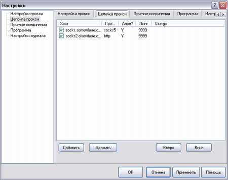

|
Цепочки прокси мощный инструмент, если вы хотите усложнить жизнь дядям в погонах :)
|

| Хост | Хост/IP адрес прокси |
| Прото | Используемый протокол. Может быть SOCKS4, SOCKS5 или HTTP |
| Анон | Анонимный прокси (Y) или нет (N). |
| Пинг | Пинг прокси. Чтобы проверить пинг -- выберете "Пинг прокси" из контекстного меню |
| Статус | Статус прокси. "OK" означает что прокси отвечает на порту |
|
|
К сожалению FreeCap не имеет полноценного прокси чекера, т.е. такие колонки как "proto" и "anon" зависят от записей в конфиге.
|
Добавление нового прокси:
 Поля те же что и в закладке Прокси по умолчанию.
Поля те же что и в закладке Прокси по умолчанию.
|